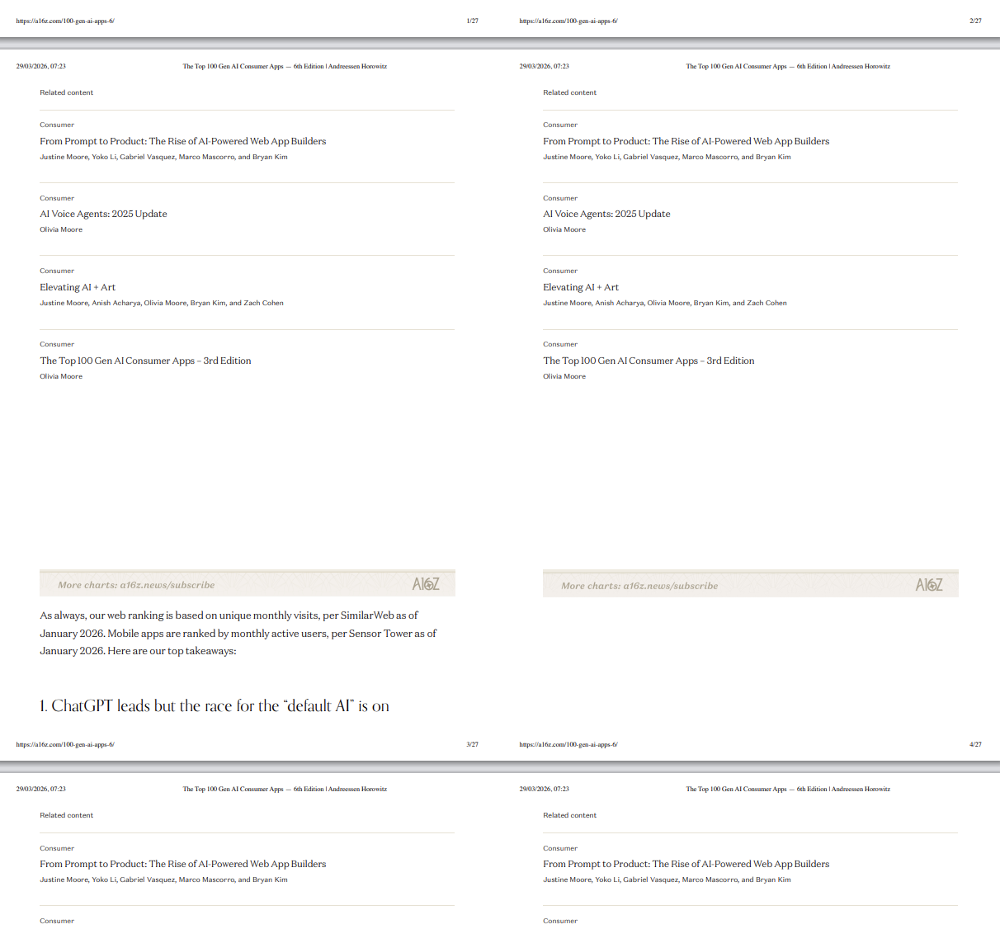
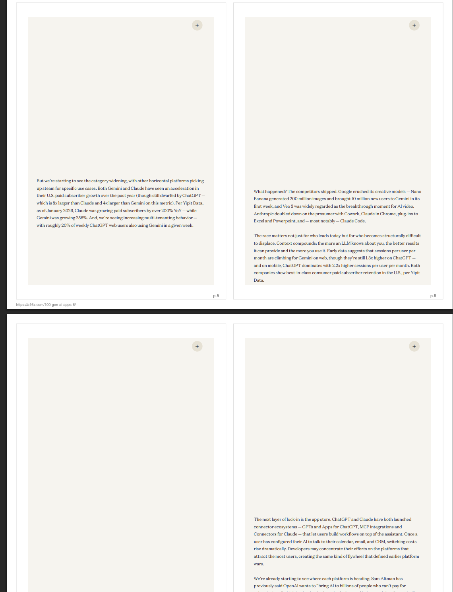
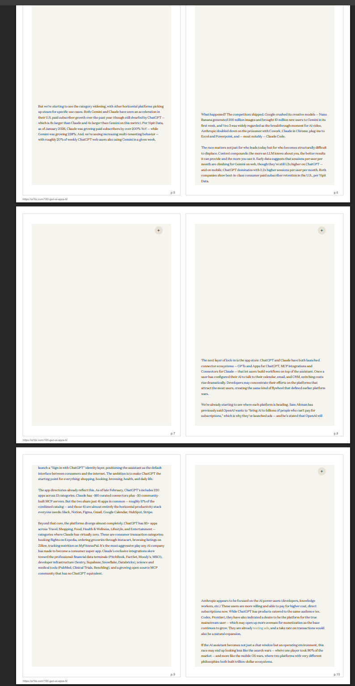
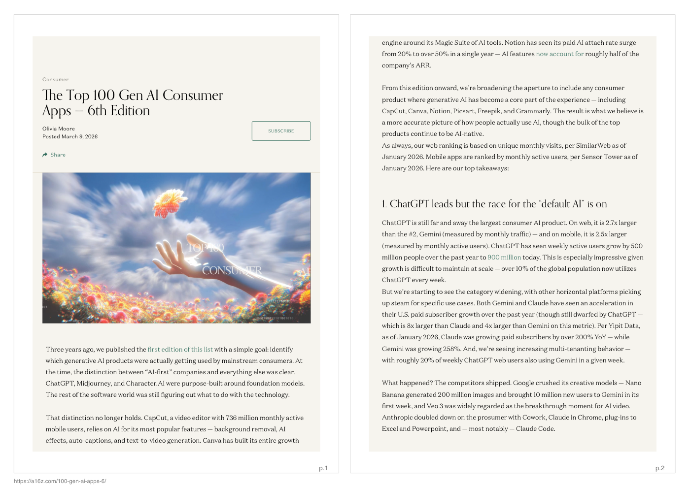

EcoPrint converts cluttered web pages into compact 2-up PDFs by removing print noise, fixing collapsed content, and optimizing layouts to reduce paper and ink waste.
git clone https://github.com/sauravtom/ecoprint.git cd ecoprint npm install npm run pdf -- "https://a16z.com/100-gen-ai-apps-6/"



